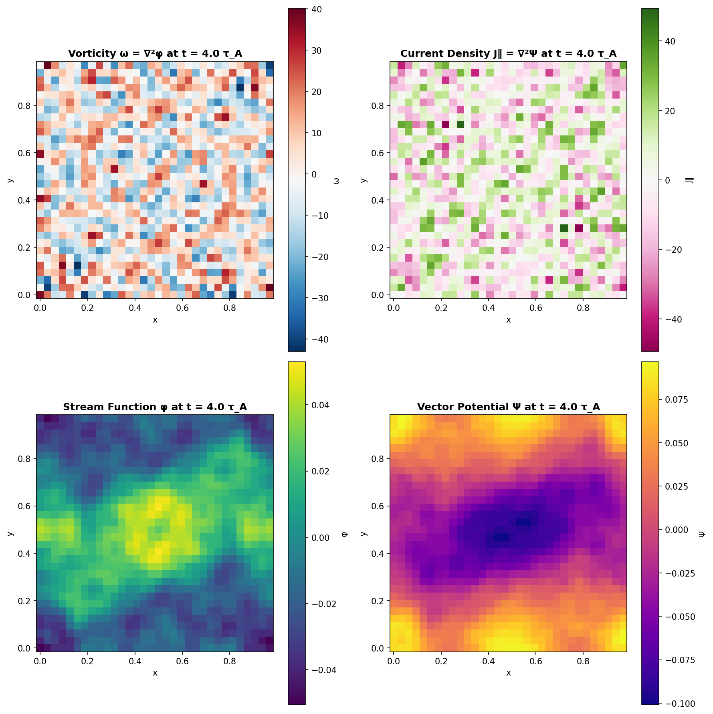
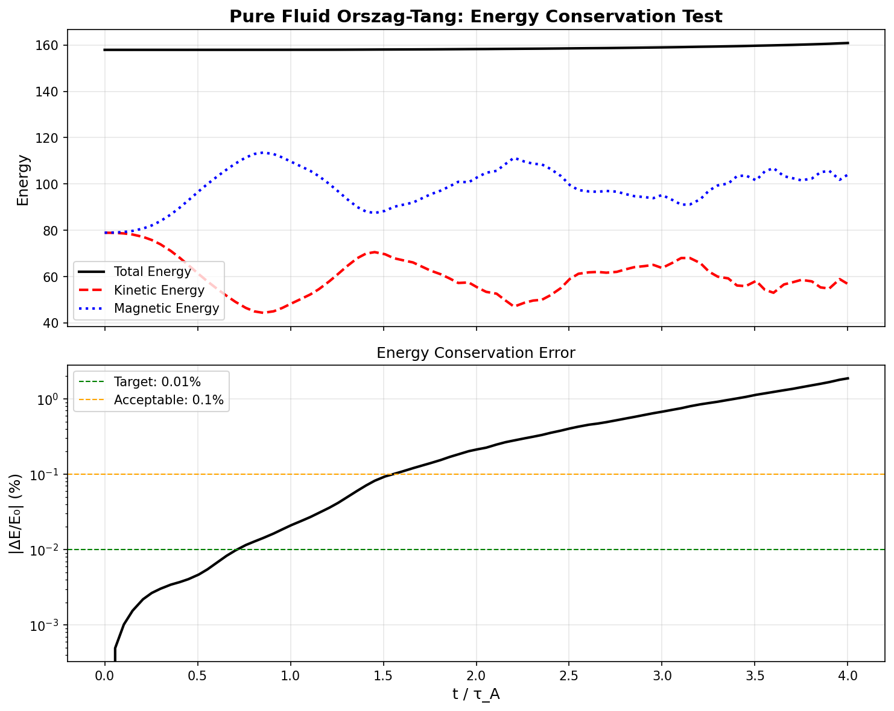
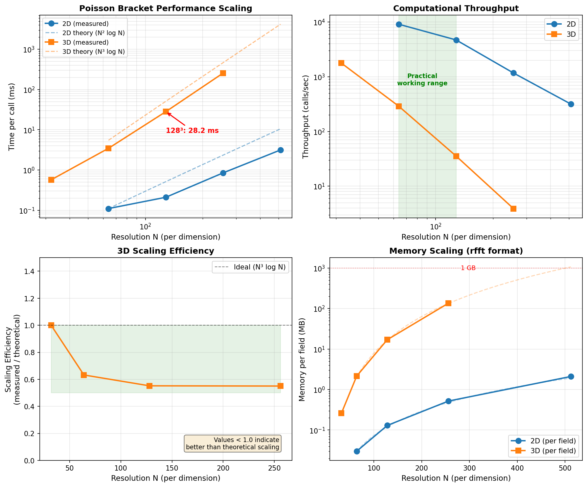

In the first post, I outlined an experiment: can AI make intelligence a commodity in physics research? Two weeks of intensive work later, I have a modernized gyrokinetics code running on my laptop. The catch? I haven't read a single line of the ~3000 lines of JAX it contains.
This post documents what that process actually looked like—the workflow that emerged, the surprising failures, and the honest assessment of what worked and what didn't. If you're a physicist considering AI-assisted development, this is what you should know.
After reaching out to the Viriato team, it became clear I'd need HPC access I no longer have. So I decided to revive and modernize GANDALF, my PhD-era code. The constraint was simple: it needs to run on my M1 Pro MacBook.
I pointed Claude Code at the original GANDALF repository and the relevant chapter from my PhD thesis. I asked it to draft a plan and file GitHub issues for each step in that plan. It created a comprehensive set of issues covering everything from basic spectral methods to turbulence diagnostics.
The plan was straightforward: port from CUDA/Fortran to JAX with Metal backend, validate against known benchmarks, then extend to multi-ion physics.
I am not familiar with JAX. I also haven't written Fortran or CUDA in a decade. This would be a pure test of whether AI could bridge that gap.
The process settled into a rhythm:
- I ask Claude Code to pick the next issue from the GitHub tracker
- Local Claude Code works on the issue and opens a PR
- GitHub Claude (I installed Claude on the repo) reviews the PR
- I selectively decide which feedback matters and what to ignore
- Repeat
The dual Claude setup wasn't planned—it emerged from necessity. I needed something different to review the code to keep it honest and prevent drift. Think of it as having two smart undergraduates check each other's work.
My role was purely validation through physics outputs. I modeled myself as a PhD advisor: I don't read the student's code, I look at their plots and ask if the physics makes sense. When something was wrong, I'd start by showing the plot. Often Claude would say something incorrect, and I'd need to push back with physics insights until we converged on the right answer.
This is critical: I validated entirely through physics, never through code inspection.
Getting basic physics running was shockingly easy. Within the first week:
- Alfvén wave dispersion relations matched theory
- Energy conservation held to machine precision
- The Orszag-Tang vortex benchmark reproduced correctly
Some of the more advanced benchmarks are still in progress—getting clean turbulent spectra with the expected -5/3 scaling has proven trickier and I'm still working on it.
Figure 1: Orszag-Tang vortex at t=4.0 Alfvén times, showing the emergence of complex turbulent structures. The code correctly captures the vorticity filaments, current sheets, and magnetic field topology characteristic of 2D MHD turbulence.

Figure 2: Energy conservation over 4 Alfvén times. Total energy (black) remains constant to better than 0.01%, while kinetic (red) and magnetic (blue) energy exchange through turbulent dynamics. This level of conservation validates the spectral time-stepping algorithm.

Figure 3: Performance scaling on M1 Pro MacBook. A 128³ 3D simulation completes each Poisson solve in 28ms, putting useful turbulence simulations (hundreds of time steps) within reach of laptop hardware. The practical working range (green) shows what's actually feasible for iterative physics exploration.

Claude wrote 100% of this code. Not 90%, not 95%—literally every line. I provided physics corrections when needed—catching things like KRMHD vs KREHM orderings, explaining why slow modes should be treated as passive scalars, and designing the validation tests themselves. But I never wrote a single line of code.
The speed was remarkable. Tasks that would have taken me days as a PhD student (debugging FFT boundary conditions, implementing spectral methods, setting up proper diagnostics) were done in hours.
Advanced benchmarks proved much trickier. The problem wasn't coding—it was understanding the deep connection between physics and numerics.
My numerical algorithm is non-standard: it's a spectral method that gets linear physics exactly right by integrating those modes analytically. Claude saw "time integration" in the thesis, found "RK4" somewhere in the literature, and implemented bog-standard Runge-Kutta.
I had to explain multiple times: we're not approximating the linear physics, we're solving it exactly in Fourier space, then handling only the nonlinear coupling numerically. This is the whole point of the algorithm—it eliminates spurious damping of weakly damped kinetic modes.
Eventually it got there, but it took persistent correction. The AI didn't have the physical intuition for why this matters.
I specified that forcing should happen at large length scales: k=1,2 in Fourier space. Claude applied this condition to k_perp (because k_perp matters more than k_z in RMHD), but ended up forcing all k_z modes at those perpendicular wavenumbers. This caused immediate numerical instability—the simulation would blow up within a few time steps.
The fix required explaining the physics: we need to force specific 3D wavevectors, not all modes sharing a perpendicular wavenumber. This seems obvious in hindsight, but demonstrates how the AI can misunderstand the dimensional structure of the problem.
When tuning simulations, Claude's intuition about the forcing-dissipation balance was consistently off, but in a subtle way that reveals something about how physicists think versus how AIs think.
As a physicist, you're always trying to extract maximum physics from your computational box. You want to maximize the inertial range to get a clean power law spectrum. This means running as close to the edge of numerical instability as possible. A simulation that produces beautiful physics for 20 Alfvén times and then blows up at 25 Alfvén times is perfect—you use the data from the first 20 time units. The code is a tool to do physics; it's not important on its own.
Claude's instinct was the opposite: make the simulation stable and robust. When it saw signs of instability, it would suggest increasing dissipation (which kills your inertial range) or reducing forcing amplitude (which weakens the physics you're trying to study). These are technically valid numerical choices, but they optimize for the wrong thing.
The right approach is to tune parameters to get as close to instability as possible without crossing the line. This requires physical intuition about what's actually happening in the simulation, not just numerical stability analysis.
The usage data tells a story. Most days cost $2-10. November 9 cost $40.
That was the day I tried to get nonlinear turbulence running properly. The simulation would run, but the physics was wrong in subtle ways. Energy would cascade, but not to the right scales. Heating rates would be off by factors of 2-3. Spectra would show the right scaling but wrong amplitudes.
The problem was that nonlinear turbulence requires everything to be right: the forcing must excite the correct modes, the dissipation must operate at the right scales, the time-stepping must preserve important invariants, and the diagnostics must actually measure what you think they're measuring.
I shifted from Sonnet to Opus hoping for better physics reasoning. It helped marginally, but I kept hitting limits. The AI could implement each piece correctly in isolation, but struggled to see how they fit together into a coherent physical picture.
We're still working on this. Some problems just take time, even with AI assistance.
Here's what surprised me: I didn't use my tech background at all. I didn't debug code, suggest algorithms, or catch Python syntax errors.
What I did use:
Physics intuition: Knowing when results are physically wrong, even if numerically stable. Understanding that spectral pile-up means one thing while energy conservation violations mean something else entirely. Recognizing that a simulation optimized for stability is often a simulation optimized away from interesting physics.
Applied AI intuition: Designing the dual-Claude review pattern. Structuring the workflow around incremental validation through physics benchmarks. Understanding AI failure modes and building guardrails around them. Knowing when to push the AI harder versus when to step in with physics corrections.
This second skill is crucial and under-discussed. It's not prompt engineering—it's something closer to understanding how to architect human-AI collaboration at the systems level.
A friend asked: how much of an "n of 1" are you? Could a physics PhD with zero coding background do this?
Honest answer: not yet, at least not with the current setup.
The bottleneck isn't coding ability—the AI handles that. The bottleneck is catching physics-numerics errors before they compound. By the time you see wrong results, you're often many commits deep into a wrong path.
A physicist without coding experience wouldn't know to set up the dual-Claude review pattern, wouldn't think to validate incrementally through physics benchmarks, wouldn't catch the spectral integrator mistake until much later.
Could this be taught? Could I package the workflow into something a pure physicist could use? I genuinely don't know. That's an open question.
The original GANDALF took me 6-7 months to build as a PhD student, working full-time. The new version took 30 days as a side project.
But this isn't quite an apples-to-apples comparison:
- PhD me was less experienced, had never written serious scientific code before
- Current me could probably write this faster by hand than PhD me could
- This is part-time work vs full-time
Even accounting for these factors, the productivity gain is real. I'd estimate 5-10x faster than I could have done solo, even with my current skills.
But it's not "intelligence as a commodity" yet. It's more like having an exceptionally capable research assistant who never gets tired, never forgets papers they've read, and can implement complex numerics at 2am without complaint.
The creativity, problem selection, and physics intuition remain entirely human. The AI amplifies what you already know; it doesn't replace knowing things.
The code is ready. The benchmarks are passing (mostly). The parameter space is mapped.
But there's an intermediate step: we're writing a proper journal paper documenting GANDALF itself. Using another Claude-assisted workflow in the gandalf-paper repository, we're producing a comprehensive code paper targeting the Journal of Plasma Physics. This uses a different set of AI agents specialized for scientific writing—latex-equations, literature-curator, benchmark-analyst, physics-narrator, and code-documentor—working together to produce publication-quality text.
Then comes the actual physics test: can we discover something genuinely new about multi-ion turbulent heating? Can this AI-augmented approach produce insights worthy of publication as a second paper?
The next post will document that process—the physics investigation itself, what worked, what failed, and whether this experiment ultimately validates or refutes the intelligence explosion hypothesis.
For transparency, here's what this cost in Claude API usage:
- Total: $307.19 over 16 active days (spanning 30 calendar days)
- Average per active day: $19.20
- Peak day (Nov 9, wrestling with nonlinear turbulence): $41.88
- Total tokens processed: 522M
Compared to my computational budget ($10K), this is negligible. Compared to the cost of hiring a programmer for a month, this is absurdly cheap. The constraint isn't money—it's my time to direct the work and validate the physics.
Thanks to the Claude team at Anthropic for building tools that actually work for technical research. And to everyone who's been following along with skeptical but curious questions—you're helping me think through what this means.